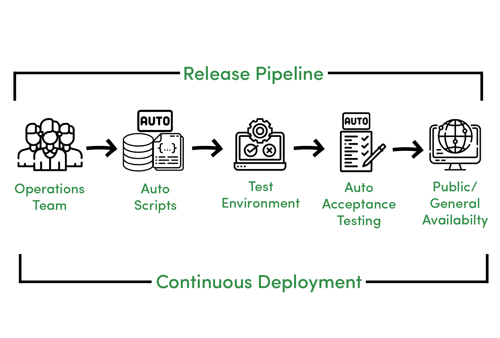
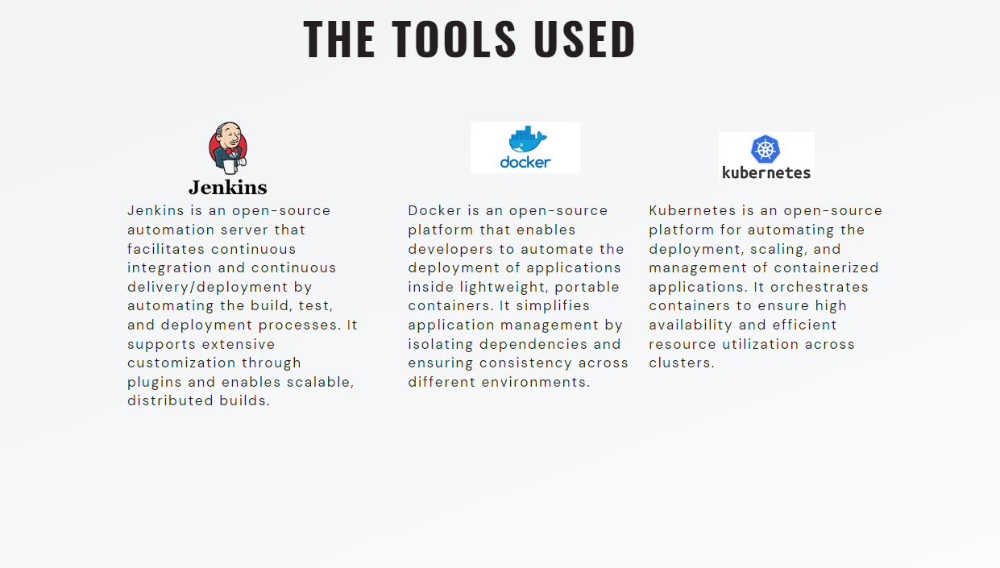
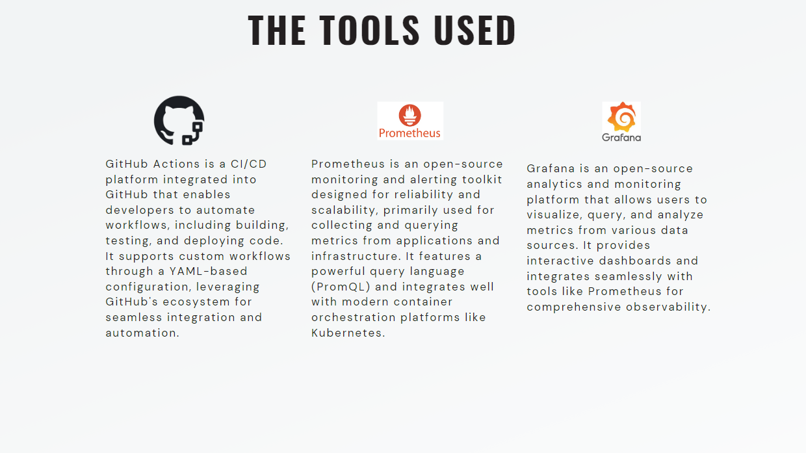

What is Continuous Deployment (CD) ?

whenever DevOps is mentioned the first 2 keywords that come to mind are automation and CI/CD pipelines.
And in this workshop we will focus on the CD (Continuous Deployment) part
Continuous deployment is a strategy for software development and releases in which every code change is automatically run through a pipeline of tests and inspections before being pushed into production
(ressource : techtarget)

